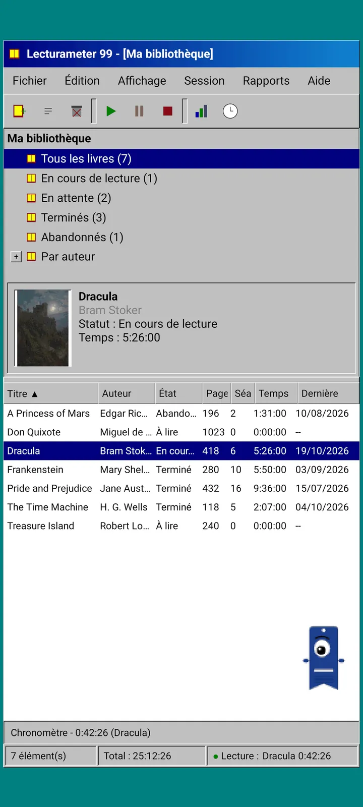
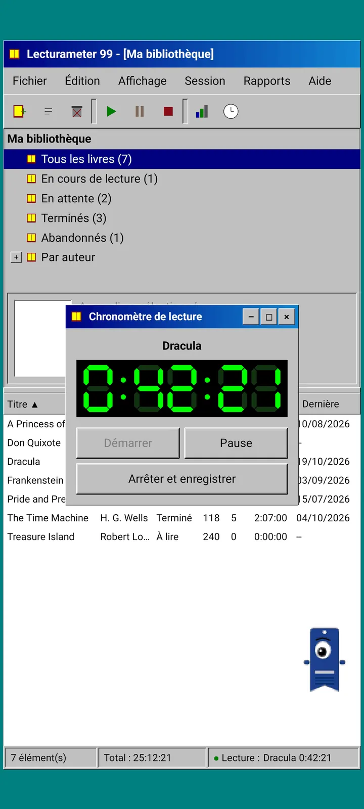
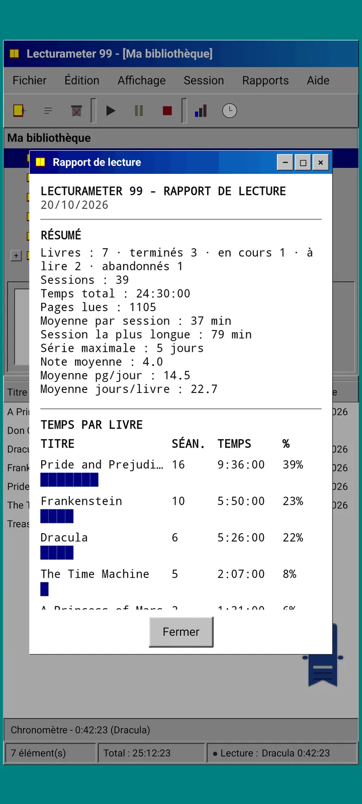
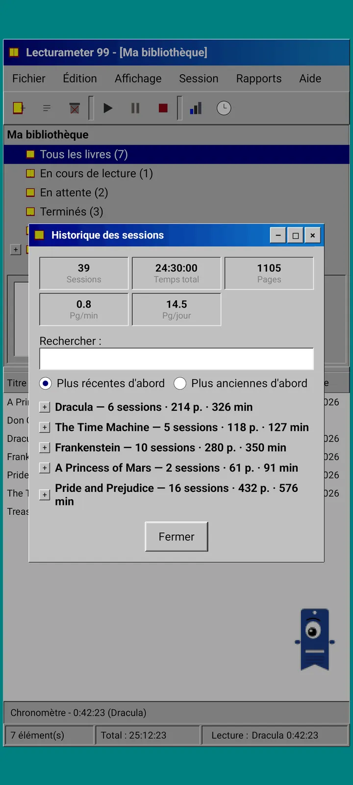
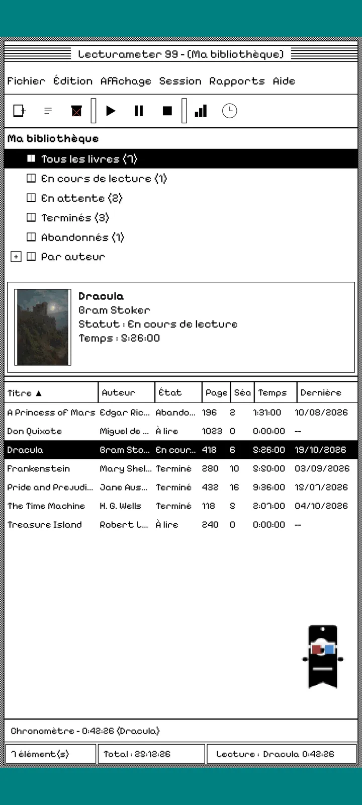
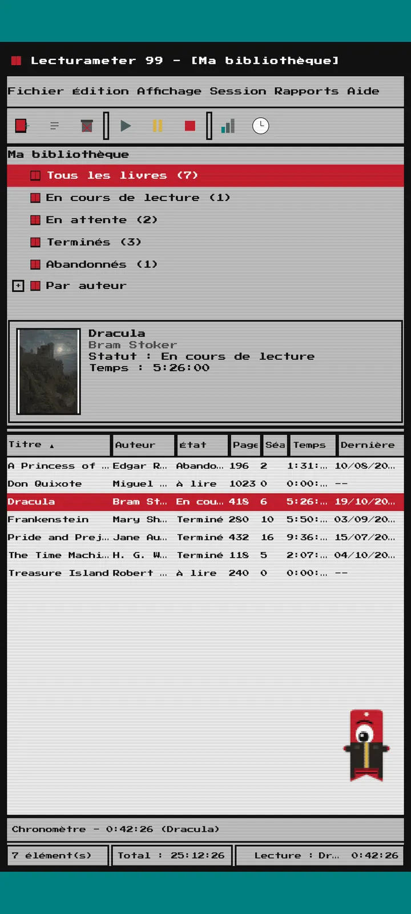
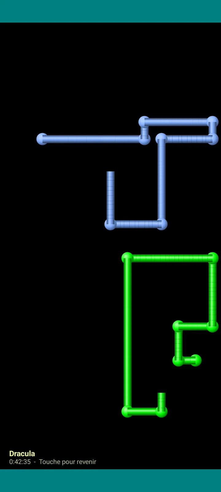

Lecturameter 1999
Lecturameter comme si tu l'avais installé depuis un CD-ROM en 1999. Un client alternatif de l'appli, avec fenêtres, menus et tableaux, qui ouvre tes vraies sauvegardes.

Ce que c'est
Un logiciel de bureau de la fin des années quatre-vingt-dix qui tourne sur ton téléphone. Une fenêtre sur un bureau bleu-vert, une barre de menus, une barre d'outils, une arborescence de dossiers, un tableau dense et une barre d'état.
- Arborescence de la bibliothèque : tous les livres, en cours de lecture, en attente, terminés, abandonnés et par auteur
- Tableau avec titre, auteur, statut, pages, sessions, temps et dernière lecture. Touche un en-tête de colonne pour trier
- Vraie recherche de livres, avec le même catalogue que Lecturameter
- Importe et exporte la sauvegarde Lecturameter et le CSV Goodreads. Tes données entrent et sortent sans rien perdre

Pourquoi il existe
Une expérience : reconstruire l'idée de Lecturameter de zéro avec des principes de design radicalement différents, sans toucher à la vraie appli. De toutes les réinterprétations, celle de 1999 est celle que j'ai préférée, alors je l'ai terminée pour le plaisir et j'en ai fait un client complet. Elle est volontairement plus simple que Lecturameter : c'est une expérience et, en principe, elle ne sera pas développée davantage.
- Chronomètre dans une fenêtre flottante avec un écran LCD vert. Il se déplace, se réduit dans une barre des tâches et continue de compter dans la barre d'état
- Quand tu t'arrêtes, la boîte de dialogue d'enregistrement de session te demande tes pages et calcule ton rythme, comme dans Lecturameter
- Les sessions enregistrées sont des sessions Lecturameter : elles reviennent dans l'appli moderne si tu exportes une sauvegarde de Lecturameter 1999 et que tu l'importes dans Lecturameter.

Rapport de lecture
Les statistiques sont un rapport imprimé : résumé, temps par livre avec des barres en blocs, vitesse en pages par jour, un calendrier de l'année dessiné en caractères et les sept derniers jours.

Historique des sessions
Sessions regroupées par livre dans une arborescence avec plus et moins, avec cinq chiffres en haut : sessions, temps total, pages, pages par minute et pages par jour.

Enregistrer la session
Date, minutes, première et dernière page, commentaire. Le résumé calcule les pages et le rythme pendant que tu tapes. Si tu atteins la dernière page, il te demande si tu as fini le livre.

Pagi 99
Pagi voyage aussi en 1999 : pixelisé et en liberté sur l'écran, comme les assistants de bureautique de l'époque. Tu peux le faire glisser, il dit une phrase quand tu le touches et il affiche des astuces dans des bulles jaunes.
Thèmes
Classic 98 est gratuit et activé par défaut. Le pack en ajoute six autres, chacun avec son propre fond et ses propres sons.

Choisis-le depuis le menu Affichage
Affichage, Thème... ouvre une fenêtre avec les sept thèmes. Le changement s'applique d'un coup à toutes les fenêtres, au chronomètre et à Pagi.
- Classic 98, gratuit et par défaut : fenêtres grises, barres de titre bleu marine et bureau bleu-vert
- Pack de thèmes : 1984, Gumdrop, Memory, Towers, Core et 8-bit
- Chaque thème apporte son propre fond de bureau et ses propres sons pour les touches, les fenêtres et le chronomètre
- Affichage, Sons du thème coupe les sons si tu lis en silence

Classic 98
Fenêtres grises, barres de titre bleu marine et bureau bleu-vert. Gratuit, c'est celui avec lequel l'appli s'ouvre.

1984
Un bureau en noir et blanc sur un bit, avec des motifs de points et des fenêtres carrées.

Gumdrop
Plastique coloré translucide, boutons arrondis et rayures en fond.

Memory
Les menus d'une console à disques des années quatre-vingt-dix, dans des bleus sombres.

Towers
Une autre console à disques des années quatre-vingt-dix, bleu nuit avec des lignes bleu clair.

Core
Une console noir et vert, comme un écran qui ne s'éteint jamais.

8-bit
Gros pixels, peu de couleurs et lettres en blocs.

Essaie avant de payer
Touche un thème verrouillé et toute l'appli passe à ce thème. Si tu fermes sans acheter, le thème précédent revient.
Économiseurs d'écran
Ils n'apparaissent que pendant que le chronomètre tourne et que tu laisses le téléphone tranquille. Ils attendent 1, 3 ou 5 minutes, ou jamais. Une touche te ramène et le chronomètre continue de compter.

Livres volants
Des livres en pixels qui battent des couvertures sur un écran noir.

Champ de lettres
Des lettres de nombreux alphabets qui défilent, comme un champ d'étoiles.

Tuyaux de pages
Des tuyaux faits de pages qui se dessinent jusqu'à remplir l'écran.

Pagi rebondissant
Pagi qui rebondit sur les bords de l'écran.

Horloge de lecture
Le temps de session en gros chiffres LCD.

Costumes pour Pagi
Huit costumes pour Pagi 99. Tu les choisis dans Affichage, Costume de Pagi..., et tu peux les essayer avant de payer.
- Baladeur à cassettes
- Casquette à l'envers
- Lunettes 3D
- Lunettes de soleil fluo
- Disquette à la main
- Blouson en cuir
- Animal de poche
- Couronne en carton
Boutique
L'appli est gratuite et complète pour enregistrer tes lectures. Ce que tu peux acheter ne change que son apparence.
Toute l'appli, sans limite de temps.
- Bibliothèque, recherche, chronomètre et sessions
- Rapport de lecture et historique des sessions
- Sauvegarde Lecturameter et CSV Goodreads, en import et en export
- Thème Classic 98 et Pagi 99
- Sans compte et sans pub
Paiements uniques, sans abonnement.
- Pack de thèmes, 3,49 € : 6 thèmes avec fond et sons, plus les économiseurs d'écran
- Économiseurs d'écran, 1,99 € : les 5 économiseurs d'écran
- Costumes de Pagi, 1,99 € : les 8 costumes
- Tout le 1999, 4,49 € : thèmes, économiseurs d'écran et costumes
Pourboires optionnels dans le menu Aide, si tu veux m'offrir un café.
Les thèmes et les costumes peuvent être essayés en direct avant de payer. Si tu fermes sans acheter, ce que tu avais revient.
Ce qui change par rapport à Lecturameter
Comme dans Lecturameter
- Mêmes données : livres, sessions, statuts, notes et commentaires. Le fichier de sauvegarde est le même dans les deux applis.
- Recherche de livres par titre ou auteur.
- Vrai chronomètre : il continue de compter en arrière-plan, même si tu fermes l'appli.
- Sans compte, sans pub, sans connexion sauf pour chercher des livres.
- Les mêmes langues que Lecturameter.
Uniquement dans l'édition 1999
- Une interface de bureau de 1999. Pas de Material.
- De vraies fenêtres : tu les fais glisser, tu les réduis et tu les fermes avec la croix.
- Rapport de lecture en texte, avec un calendrier dessiné en caractères.
- Menu contextuel par appui long et raccourcis clavier si tu branches un clavier.
- Pagi 99 pixelisé avec des bulles d'astuces.
- Thèmes optionnels avec leur propre fond et leurs propres sons, économiseurs d'écran pendant que le chronomètre tourne et costumes pour Pagi.
Ce qu'il laisse de côté, exprès
- Pas de Pro ni d'abonnement. Enregistrer tes lectures est entièrement gratuit, la boutique ne vend que l'apparence.
- Pas de défis, de bingos, de Wrapped annuel ni de widgets.
- Pas de session immersive, de sons d'ambiance ni de sauvegarde sur Google Drive. La sauvegarde est enregistrée dans un fichier.
Test fermé
Lecturameter 1999 est en test fermé sur Google Play. iOS viendra plus tard, sans date pour l'instant.
- Rejoins le groupe groups.google.com/g/lecturameter-1999
- Inscris-toi comme testeur sur play.google.com/apps/testing/com.lecturameter.r1999
- Installe-le depuis Google Play
En test fermé sur Google Play, iOS plus tard. Lis l'article du blog pour savoir d'où il vient et à quoi t'attendre.